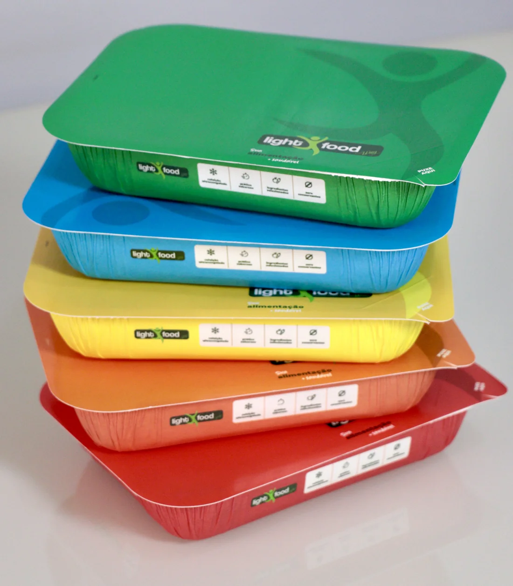

Casa
Casa
Caseirinhos
O sabor daquela comida que lembra casa, agora com a praticidade que a sua rotina precisa.
Conhecer CaseirinhosRefeições práticas, saborosas e ultracongeladas para você ter mais facilidade no dia a dia, sem abrir mão da qualidade.
Escolhas para diferentes momentos, com a facilidade que a sua rotina pede.
Da comida caseira às opções para quem treina, encontre uma linha que combina com a sua rotina.
Casa
O sabor daquela comida que lembra casa, agora com a praticidade que a sua rotina precisa.
Conhecer Caseirinhos Aves
Aves
Opções com frango para deixar suas refeições práticas, saborosas e variadas.
Conhecer linha Frango Carnes
Carnes
Pratos com carne bovina para quem gosta de refeições saborosas e cheias de opções.
Conhecer linha Bovina Do mar
Do mar
Opções com peixe para variar o cardápio com praticidade.
Conhecer linha Peixe Massas
Massas
Massas saborosas para transformar uma refeição prática em um momento ainda mais gostoso.
Conhecer Massas Treino
Treino
Opções para quem treina, busca praticidade e quer facilitar a organização das refeições dentro da rotina.
Conhecer linha Maromba Sem carne
Sem carne
Opções sem carne para quem busca variedade e diferentes possibilidades para a alimentação.
Conhecer linha Veggie Quentinho
Quentinho
Uma opção prática e saborosa para aqueles dias em que tudo o que você quer é uma refeição quentinha.
Conhecer SopasConheça nossas linhas e encontre suas opções favoritas.
Use nosso mapa para localizar a Light Food Way mais próxima.
Consulte o cardápio e escolha o canal de pedido disponível na unidade.
Receba ou retire seu pedido e tenha uma refeição prática e saborosa.
A Light Food Way nasceu para tornar a alimentação mais prática em uma rotina cada vez mais corrida. São refeições que unem sabor, variedade e a facilidade de ter uma boa escolha à disposição.
Conheça nossa história
São unidades em diferentes regiões do Brasil. Encontre a mais próxima, conheça a unidade e faça seu pedido.
Encontre uma Light Food Way perto de você e descubra suas próximas refeições favoritas.